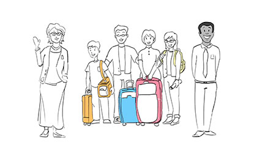
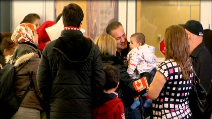
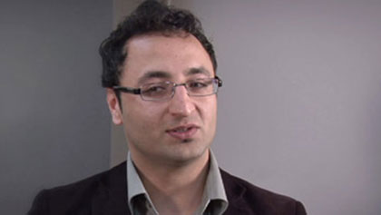
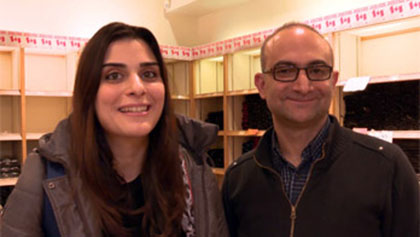
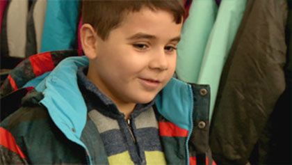
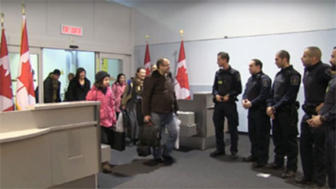

La biométrie : Étape par étape
 |
4:46 |
2018-06-29 |
Marie-Chantal Germain, participante au volet Stage coop d’EIC en France
 |
5:25 |
2018-06-18 |
Mariage frauduleux : des victimes racontent
 |
5:48 |
2018-06-08 |
La biométrie : Faciliter les déplacements des voyages sans compromettre la sécurité du Canada
 |
2:37 |
2018-05-25 |
Étudiants étrangers : étudier, travailler et rester au Canada
 |
2:57 |
2018-03-22 |
Programme pilote d’immigration au Canada atlantique – Kirk MacKinnon
 |
0:27 |
2018-02-22 |
Programme pilote d’immigration au Canada atlantique – Karen Holden
 |
0:24 |
2018-02-22 |
Programme pilote d’immigration au Canada atlantique – Kingsly Chia
 |
0:24 |
2018-02-20 |
Protégez-vous contre la fraude
 |
0:42 |
2018-01-24 |
L’autorisation de voyage électronique (AVE) expliquée en une minute
 |
1:04 |
2016-03-15 |
Message de Noël du Ministre Hussen
 |
0:46 |
2017-12-22 |
Immigration francophone au Canada : les avantages du bilinguisme
 |
0:27 |
2017-11-09 |
Immigration francophone au Canada : collectivités hors Québec
 |
0:24 |
2017-11-09 |
Immigration francophone au Canada : Travailleurs temporaires
 |
0:25 |
2017-11-09 |
Immigration francophone au Canada : Entrée express
 |
0:29 |
2017-11-09 |
Immigration francophone au Canada : Langues officielles
 |
0:23 |
2017-11-09 |
Message du ministre : Célébrez la Semaine nationale de l’immigration francophone
 |
2:06 |
2017-10-30 |
Demander le statut de réfugié au Canada : ce que vous devez savoir
 |
2:33 |
2017-08-29 |
Programme de visa pour démarrage d’entreprise
 |
0:50 |
2017-08-10 |
Bienvenue chez vous au Canada – Célébrer la citoyenneté canadienne
 |
2:16 |
2017-08-10 |
Programme pilote d’immigration au Canada atlantique : (1) Processus de désignation de l’employeur
 |
3:18 |
2017-07-12 |
Programme pilote d’immigration au Canada atlantique : (2) Approbation du demandeur
|
3:04 |
2017-07-12 |
Programme pilote d’immigration au Canada atlantique : (3) Demande et soutien après l’arrivée
|
3:36 |
2017-07-12 |
Une nouvelle vie au Canada
 |
11:57 |
2017-06-20 |
Utilisation du Portail des employeurs - Programme de mobilité internationale
 |
9:03 |
2017-05-02 |
Ce que vous devez savoir avant l’exam de citoyenneté
 |
5:07 |
2017-03-30 |
Des enfants Syriens découvrent le hockey
 |
3:23 |
2017-03-23 |
Des services d’établissement pour les nouveaux arrivants
 |
0:34 |
2017-03-10 |
70e anniversaire de la citoyenneté canadienne
 |
1:47 |
2017-03-08 |
Jeunes Canadiens, travaillez à l’étranger avec Expérience internationale Canada
 |
1:26 |
2017-01-16 |
Immigrer au Canada : Comment créer un profil d’Entrée Express
 |
4:48 |
2016-12-28 |
Accueil des réfugiés syriens au Canada : Rétrospective
 |
1:44 |
2016-12-12 |
Daniel Alfredsson parle de devenir un citoyen canadien
 |
1:33 |
2016-10-15 |
Famille de réfugiés apprenant le français et amorçant une nouvelle vie au Québec
 |
5:03 |
2016-10-11 |
Célébrez le fait d’être Canadien - Commentaires du ministre McCallum
 |
1:32 |
2016-10-08 |
La diversité est la force du Canada - série art et culture : Giorgia Fumanti
 |
2:42 |
2016-10-07 |
Autorisation de voyage électronique (AVE) : Ne vous faites pas duper
 |
0:19 |
2016-10-03 |
Un pays fort et libre : James Nguyen
 |
0:48 |
2016-09-29 |
Hung Vu explique pourquoi il est fier d’être Canadien.
 |
0:43 |
2016-09-29 |
Lan Ton explique pourquoi il est fier d’être Canadien.
 |
0:40 |
2016-09-29 |
Des réfugiés commencent une nouvelle vie au Canada à Winnipeg et à Charlottetown
 |
5:14 |
2016-08-30 |
Entrée express - Un nouvel outil pour embaucher des immigrants qualifiés
 |
4:03 |
2016-08-02 |
Entrée express - Un nouvel outil pour embaucher des immigrants qualifiés
 |
3:29 |
2016-08-02 |
Les jeunes se mobilisent pour accueillir des réfugiés Syriens : Dartmouth
 |
1:47 |
2016-06-13 |
Autorisation de voyage électronique (AVE) : Ce que vous devez savoir
 |
2:31 |
2016-04-16 |
Aider les jeunes nouveaux arrivants à s’intégrer au Canada : Halifax
 |
5:29 |
2016-04-15 |
Se réinstaller au Canada : L’accueil des réfugiés syriens
 |
3:47 |
2016-03-30 |
Des Néo Écossais aident les réfugiés syriens à s’installer au Canada
 |
4:25 |
2016-03-17 |
La tradition humanitaire du Canada : la perspective argentine
|
1:05 |
2016-03-11 |
La tradition humanitaire du Canada : la perspective des réfugiés
 |
0:54 |
2016-03-01 |
Bienvenue à la famille Kurdi au Canada
 |
0:39 |
2016-01-06 |
Tima Kurdi s’exprime sur les réfugiés
|
0:26 |
2016-01-06 |
Fawad - Voyage au Canada : Récits de réfugiés
 |
0:50 |
2015-12-22 |
Des réfugiés vietnamiens donnent au suivant : James Nguyen
|
0:58 |
2015-12-22 |
Des réfugiés vietnamiens donnent au suivant : Le Luong
|
0:54 |
2015-12-22 |
De Damas à Toronto : l’histoire de Mohamed
|
0:56 |
2015-12-22 |
Le Canada : une tradition humanitaire : Hala
 |
0:39 |
2015-12-18 |
Le Canada : une tradition humanitaire : Vanig
|
0:39 |
2015-12-18 |
Le Canada : une tradition humanitaire : Youssef
|
1:37 |
2015-12-18 |
Le Canada : une tradition humanitaire : l’arrivée des réfugiés du Kosovo
 |
1:40 |
2015-12-16 |
Réfugiés syriens : Deuxième vol arrive
 |
0:41 |
2015-12-14 |
Réfugiés syriens : Premier vol arrive à Toronto le 10 déc. 2015
 |
0:58 |
2015-12-11 |
Forum sur l’accueil des réfugiés syriens au Canada - gouverneur général du Canada
|
9:37 |
2015-12-11 |
Forum sur l’accueil des réfugiés syriens au Canada
|
10:04 |
2015-12-11 |
Forum sur l’accueil des réfugiés syriens au Canada - M. Volker Türk
|
3:47 |
2015-12-11 |
L’intégration des enfants dans les communautés francophones
 |
2:33 |
2015-12-10 |
Les opportunités au Canada
 |
3:07 |
2015-12-10 |
Les services d’établissement offerts en français
 |
3:24 |
2015-12-10 |
Le français en milieu de travail à l’extérieur du Québec
 |
3:16 |
2015-12-10 |
Le Canada : une tradition humanitaire : Tuyet Lam
|
0:38 |
2015-12-03 |
Le Canada : une tradition humanitaire : Gerry Maffre
|
0:39 |
2015-12-03 |
Des réfugiés vietnamiens donnent au suivant : James Nguyen
|
0:58 |
2015-12-03 |
Le Canada : une tradition humanitaire : Lan Ton
|
0:34 |
2015-12-03 |
La vie en français au Canada
 |
11:33 |
2015-03-20 |
La cérémonie de citoyenneté canadienne : Ce que vous devez savoir
 |
12:07 |
2015-03-05 |
Entrée express : Le Canada : votre nouveau foyer
 |
1:39 |
2014-12-31 |
Que représente la francophonie canadienne?
 |
2:01 |
2014-10-31 |
L’accueil dans les communautés francophones
 |
2:01 |
2014-10-31 |
Vivre dans les communautés francophones
 |
2:32 |
2014-10-31 |
Les avantages de parler français ou d’être bilingue
 |
2:15 |
2014-10-31 |
Devenir bilingue
 |
2:30 |
2014-10-31 |
Un pays fort et libre : Guy Gérard Chabe Ngako
 |
1:11 |
2014-10-09 |
Un pays fort et libre : Jonathan Mpunge
 |
0:55 |
2014-10-09 |
Destination Canada
 |
5:22 |
2014-09-22 |
Trucs pour les photos de passeport d’adultes
 |
2:07 |
2014-09-05 |
Trucs pour les photos de passeport pour les jeunes enfants
 |
1:39 |
2014-09-05 |
Trucs pour les photos de passeport pour les bébés
 |
1:53 |
2014-09-05 |
Le passeport électronique canadien
 |
3:03 |
2014-09-05 |
La puce dans le passeport électronique canadien
 |
1:42 |
2014-09-05 |
Le passeport canadien : Un excellent rapport qualité prix
 |
1:47 |
2014-09-05 |
Le financement de Passeport Canada
 |
2:14 |
2014-09-05 |
Formation Linguistique pour le Canada
 |
5:45 |
2014-07-31 |
Favoriser la reconnaissance des titres de compétences étrangers
 |
5:10 |
2014-06-24 |
Programme mixte des réfugiés désignés par les bureaux des visas
 |
4:50 |
2014-04-28 |
Le serment de citoyenneté
 |
0:42 |
2014-04-09 |
La réaffirmation du serment de citoyenneté
 |
0:42 |
2014-04-09 |
Choisissez votre représentant avec prudence
 |
1:00 |
2014-03-13 |
Un pays fort et libre : Tahina Rabezanahary
 |
1:12 |
2013-10-18 |
Un pays fort et libre : La famille Rojas
 |
1:49 |
2013-10-18 |
Un pays fort et libre : David Shentow
 |
2:11 |
2013-10-18 |
Comment organiser une cérémonie de citoyenneté
 |
11:09 |
2013-09-16 |
L’immigration économique à l’œuvre pour le Canada
 |
5:32 |
2013-07-08 |
Processus d’évaluation des diplômes d’études
 |
3:00 |
2013-05-23 |
Recours aux services d’un représentant (IMM 5476)
 |
7:02 |
2013-05-17 |
Avant votre arrivée au Canada
 |
10:57 |
2013-04-19 |
Vos deux premières semaines au Canada
 |
10:02 |
2013-04-19 |
La carte de résident permanent
 |
2:45 |
2013-01-25 |
Libre
 |
0:31 |
2012-10-12 |
Réaffirmez votre citoyenneté : La grande prestation de serment au Canada
 |
2:40 |
2012-07-26 |
Formulaires d’immigration et de citoyenneté : les éléments essentiels
 |
1:45 |
2012-05-02 |
Ne gaspillez pas de temps. Envoyez une demande complète.
 |
10:45 |
2012-04-23 |
Voyage au Canada : Récits de réfugiés – Un avenir meilleur
 |
4:10 |
2011-11-24 |
Opération Cigogne : un an plus tard
 |
2:34 |
2011-06-18 |
Voyage au Canada : Récits de réfugiés – le Canada tend la main
 |
3:56 |
2011-06-17 |
Voyage au Canada : Récits de réfugiés – Fawad
 |
3:17 |
2011-03-13 |
Voyage au Canada : Récits de réfugiés – Madut
 |
3:04 |
2010-11-09 |
Voyage au Canada : Récits de réfugiés – Fatima
 |
3:02 |
2010-06-18 |
Programme des candidats des provinces
 |
1:59 |
2010-04-22 |
Opération Cigogne
 |
1:49 |
2010-02-03 |
Devenir Canadien : intégration
 |
2:00 |
2009-06-17 |
Devenir Canadien : Lutter contre la fraude en matière d’immigration
 |
2:30 |
2009-06-16 |
Devenir Canadien : Programme de réinstallation des réfugiés
 |
2:00 |
2009-06-16 |
Se réveiller Canadien
 |
1:13 |
2009-04-08 |
Catégorie de l’expérience canadienne : étudiants
 |
2:30 |
2009-03-13 |
Devenir Canadien : citoyenneté
 |
2:10 |
2009-03-03 |